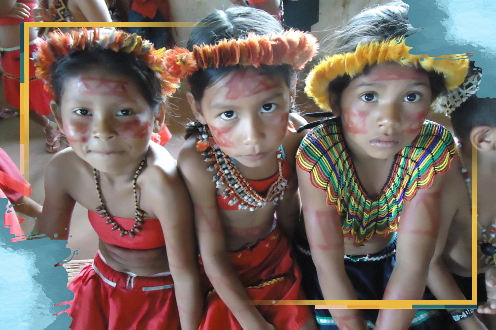

Oracoes Missionarias
A vida missionária na Amazônia
28 de Outubro de 2020

Oração inicial
Espírito Santo, sopro de vida, que fazes novas todas as coisas, abre nossos corações às tuas inspirações para que, ao escutar e aprofundar tua Palavra, aumente em nós o ardor missionário e o cuidado com a Casa Comum, nossa terra, e o amor a todas as tuas criaturas, sobretudo cada pessoa criada à tua imagem e semelhança. Espírito de Sabedoria , guia nossos passos nos caminhos da missão. Amém.Reflexão
O Sínodo da Amazônia que se realizou em outubro do ano passado, após dois anos de intensa preparação, foi um verdadeiro kairós que, pela ação do Espírito Santo, . marcou a história da Igreja, não só da Pan-Amazônia, mas de todo o mundo.O objetivo principal do Sínodo foi “identificar novos caminhos para a Evangelização daquela porção do Povo de Deus, especialmente dos indígenas, frequentemente esquecidos e sem perspectivas de um futuro sereno, e também por causa da crise da Floresta Amazônica, pulmão de capital importância para nosso planeta”.
Em fevereiro deste ano,o Papa Francisco publicou a Exortação Apostólica Pós-Sinodal “Querida Amazônia” apresentando seus sonhos para a Amazônia e convidando a todos para retomarem o Documento Final do Sínodo com suas reflexões, indicativos de novos caminhos para a Evangelização e para a ecologia integral.
de Deus: Lc 4, 16-21
Ele foi a Nazaré, onde havia sido criado, e no dia de sábado entrou na sinagoga, como era seu costume. E levantou-se para ler. Foi-lhe entregue o livro do profeta Isaías. Abriu-o e encontrou o lugar onde está escrito: "O Espírito do Senhor está sobre mim, porque ele me ungiu para pregar boas novas aos pobres. Ele me enviou para proclamar liberdade aos presos e recuperação da vista aos cegos, para libertar os oprimidos e proclamar o ano da graça do Senhor". Então ele fechou o livro, devolveu-o ao assistente e assentou-se. Na sinagoga todos tinham os olhos fitos nele; e ele começou a dizer-lhes: "Hoje se cumpriu a Escritura que vocês acabaram de ouvir".Para meditar
Neste texto Jesus apresenta sua missão como compromisso com os mais vulneráveis e sofredores e anuncia um ano de graça do Senhor. Como estou vivendo a missão? Como este Evangelho ilumina a minha prática de vida?
Oração do Mês Missionário
Deus Pai, Filho e Espírito Santo, fonte transbordante da missão, ajuda-nos a compreender que a vida é missão, dom e compromisso. Que Maria, nossa intercessora na cidade, no campo, na Amazônia e em toda parte, ajude cada um de nós a ser testemunhas proféticas do Evangelho, numa Igreja sinodal e em estado permanente de missão. Eis-me aqui, Senhor, envia-me! Amém.
Assista ao vídeo
Veja as iniciativas missionárias que estão surgindo após o Sínodo da Amazônia. Há muito a fazer, mas vale a pena se comprometer com a ecologia integral e cuidar da nossa Casa Comum.Para rezar a novena completa com a sua família, comunidade ou grupos on-line, baixe o livrinho:
Novena Missionária 2020
Destaques
Província Stella Matutina
Rua São Benedito, 2146 - Santo Amaro - São Paulo - SP |
Tel. (11)
5547-7222


Província Spiritus Divinae Sapientiae
Rua Arnaldo Janssen, 320 - Cara-Cara - Ponta Grossa - PR
|
Tel. (42) 3326 4091